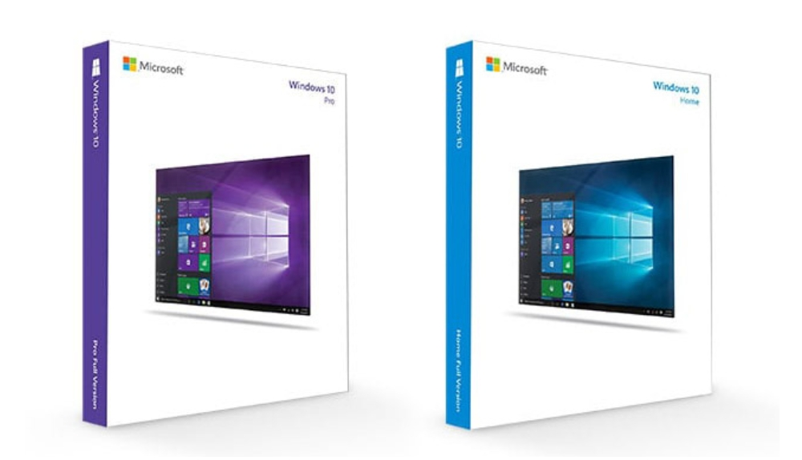

Operating Systems
Windows is a series of operating systems (OS), developed by Microsoft for personal computers. Each OS comes with a graphical interface (GUI) that allows users to view, interact and change files, videos and documents. Windows is made for all standard x86 hardware and comes with most PCs or laptops. The most current Windows version is Windows 10 which currently is 75% of the market according to statista

Linux is an open source operating system based on UNIX. Users can modify the source code and create their own distributions. Linux also comes with a graphical interface (GUI) with some necessary daily use software. It's used in desktops, mobile devices, gaming consoles, digital storage devices, eReaders, cameras and video recorders. However, Linux is mostly used for servers, as most of the web pages on the internet are from Linux servers. You can easily spin up a linux server using services like amazon's EC2 Instances
| OS | Windows 10 | Linux |
| Source Code | Every user can alter the kernel or source code. To which bug fixes can happen rapidly, but anyone can discover vulnerabilities also. | Only certain hired developers have the source code, which can improve security. |
| Variety | Linux has hundreds of different distributions, GUIs, customization options, and is highly configurable. | Windows has a very limited amount of customization. |
| Licensing | Linux is licensed but free, making most distributions free as well, but open to the possibility of paid ones. | Windows users buy a license or device that is bound with a licence, and has no entitlement to the source code. |
| Command Line | In Linux the command line and the know-how of using the command line is vital for all kinds of tasks. | In Windows the command line is rarely used by typical users, 99% of programs and tasks have a user interface so it isn't strictly needed for day to day. |
| Usability | Linux can be hard or easy to install depending on the use case and the distribution. But more complex tasks are easier, using the command line. | Windows is more geared towards a more simpler user experience, so is larger and takes a long time to install. |
| Updates | In Linux users have complete control of what and when programs get updated, and rarely needs restarts to complete updates. | In Windows, updates will at times force themselves through or will update once you restart your device. |
| Security | There are a plethora of distributions and versions, but a limbed number of people using it so there are less vulnerabilities exposed and more users are able to find and fix vulnerabilites also. | Windows is a big target because of its huge market share and user base, so it makes sense that there are more attacks, and vulnerabilities exposed. |
| Use Case | Linux is made to be customizable, for server use, for collaboration and those who don't want to use Windows. | Windows is used for a simpler experience and made to "just work" most of the time. |